2.2.1.2 Configurar un cliente de escritorio -Red Interna
1. Cliente Windows 10 - Red Interna
En primer lugar hay que descargar el instalador de WireGuard de la página https://www.wireguard.com/install. Una vez descargado, se ejecuta para su instalación en el equipo.
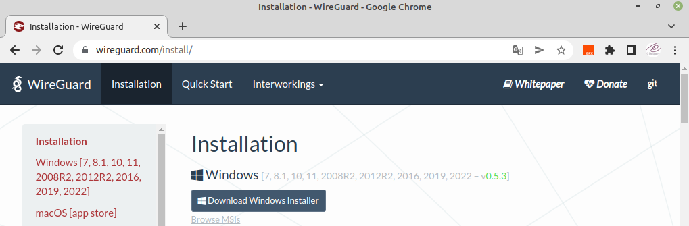
Al finalizar la instalación, se abre la aplicación y hay que pulsar en el botón 'Añadir Túnel'.
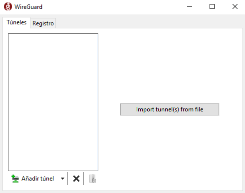
Hay que elegir la opción 'Añadir túnel vacío..' 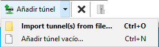
Generará automáticamente la clave pública y la clave privada del cliente. Hay que anotar la clave pública porque hará falta en el último paso para permitir el acceso de este cliente en el servidor. Como nombre, hay que ponerle uno descriptivo, ejemplo: tunelW10Ciber.
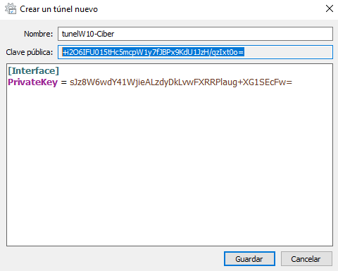
Dentro del apartado Interface hay que añadir:
- PrivateKey: Clave privada creada por la aplicación al crear el nuevo túnel.
- Address: Directiva con la IP que se le quiere asignar al cliente (192.168.8.112 en el esquema de red de este caso).
- DNS: Directiva en la que se indican los servidores DNS que se quieren utilizar cuando se tenga el túnel activado.
A continuación, hay que escribir un nuevo apartado Peer en el que se indicarán tres directivas:
- PublicKey, la clave pública del servidor.
- AllowedIPs, IPs permitidas para el servidor, se puede dejar 0.0.0.0/0 para indicar que cualquiera tendrá acceso.
- Endpoint, donde se indica la IP pública del servidor y el puerto udp donde está wireguard.
[Interface]
PrivateKey = sJz8W6wdY41WjieALzdyDkLvwFXRRPlaug+XG1SEcFw=
Address = 192.168.8.112
DNS = 8.8.8.8, 8.8.4.4
[Peer]
PublicKey = coD7BXnIgmQ2fnga23V3naeEmJeETVpuXjIbvZuQ/00=
AllowedIPs = 0.0.0.0/0
Endpoint = 192.168.0.254:15000
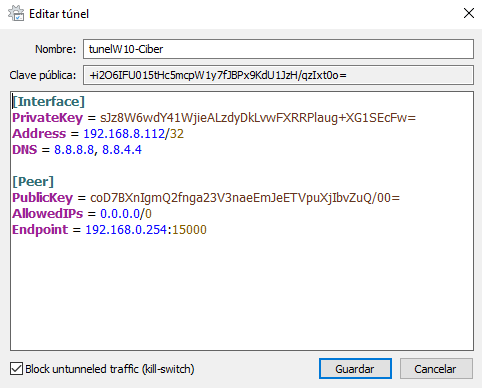
Para finalizar, hay que pulsar 'Guardar', y el túnel estará creado sin activar.
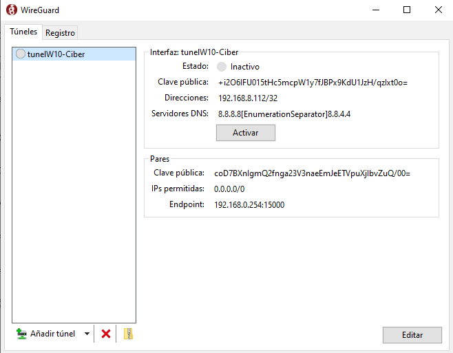
Si se pulsa el botón Activar, se activará mostrando un icono verde.
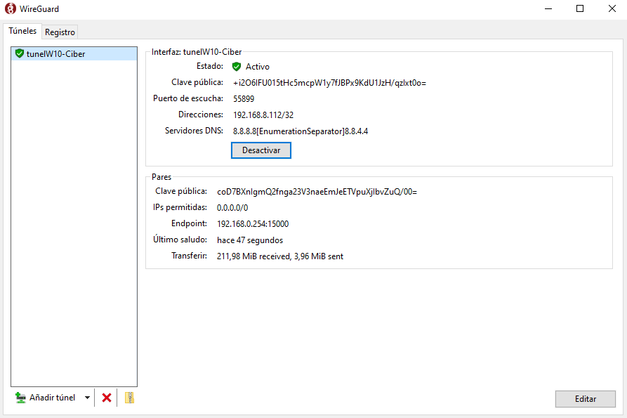
Cuando se activa, aparece un mensaje en la parte inferior informando.
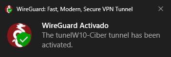
En la barra de herramientas inferior también aparecerá el icono de WireGuard, donde se podrá activar y desactivar el túnel VPN desde ahí.
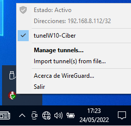
Sin embargo, la conexión no funcionará hasta que no se agregue el cliente en el servidor. Para ello, hay que ejecutar el siguiente comando en el servidor:
root@wireguard:/#wg set wg0 peer [Clave_Pública_Cliente] allowed-ips [IP_Cliente]
donde,
- [Clave_Pública_Cliente]: Es la creada en la aplicación al crear el nuevo túnel: +i2O6IFU015tHc5mcpW1y7fJBPx9KdU1JzH/qzIxt0o=
- [IP_Cliente]: La ip que se desea asignar al cliente, para este caso, la 192.168.8.112.
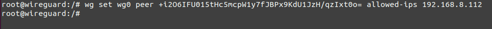
Una vez agregado, ya se puede consultar con el comando wg en el servidor la conexión establecida.
| 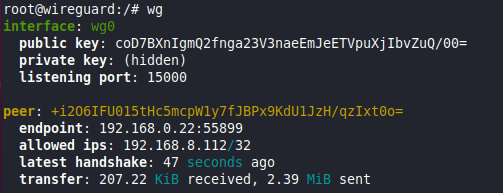 |  |
Obra publicada con Licencia Creative Commons Reconocimiento No comercial Compartir igual 4.0